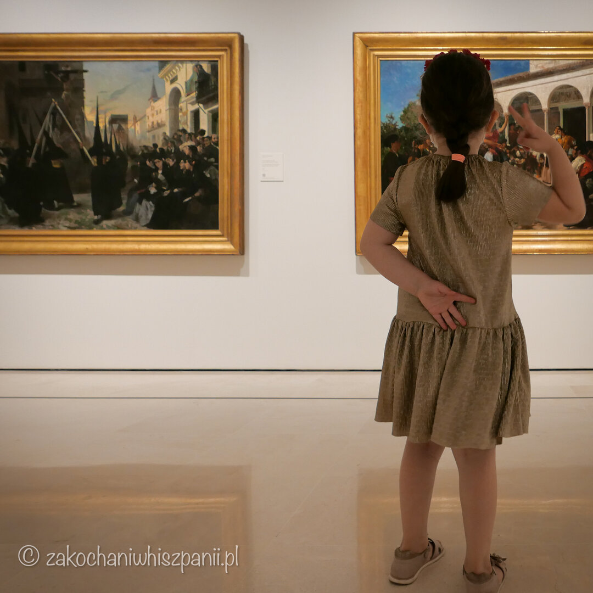
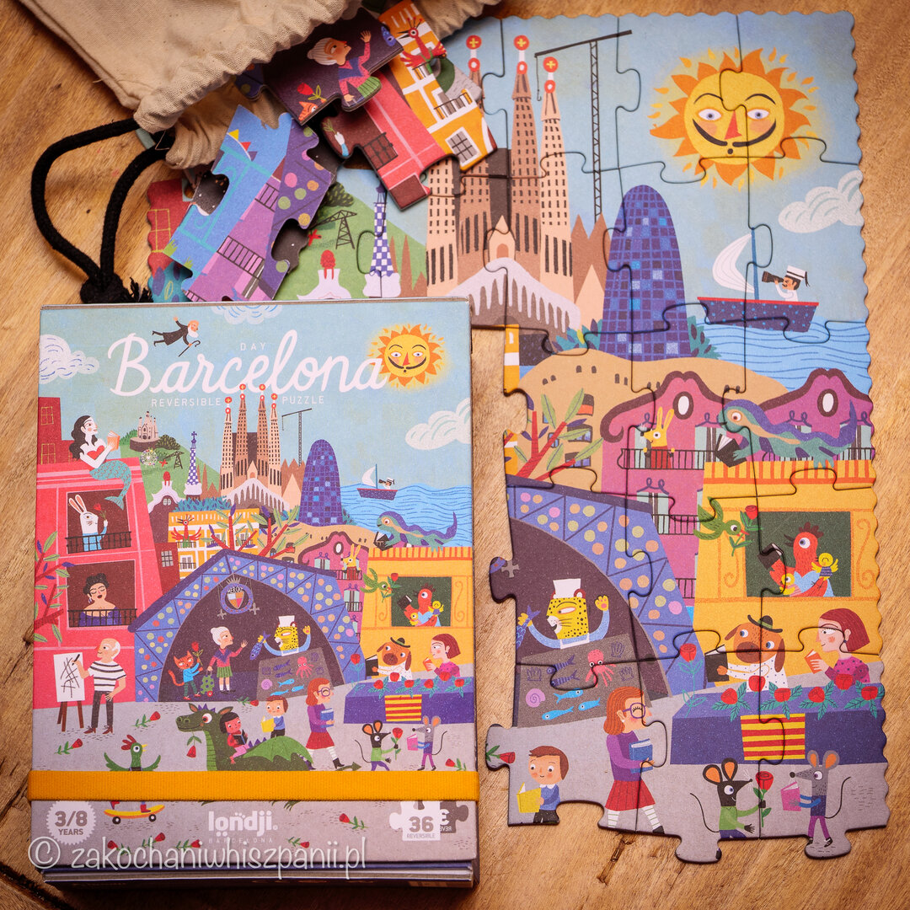

Ferie w Polsce inspirowane kulturą hiszpańską
6 pomysłów jak spędzić ferie zimowe w mieście
Uczniowie szkół z województw: małopolskiego, świętokrzyskiego, lubuskiego, kujawsko-pomorskiego oraz wielkopolskiego, rozpoczęli ferie 2022 już w tym tygodniu.
Gdzie spędzasz ferie zimowe, w górach, nad morzem, za granicą? Jeśli Ty i Twoja rodzina zostajecie w tegoroczne ferie w domu, a nie masz jeszcze pomysłu co robić ciekawego z dzieckiem w czasie wolnego. Nie martw się :) Przychodzimy Ci z pomocą.
Przygotowaliśmy dla Ciebie 6 pomysłów na spędzenie czasu w ferie z dziećmi inspirowane kulturą hiszpańską.
- Ferie / półkolonie w szkole językowej Kurs w El bombo lub innej szkole językowej
- Wycieczka do wirtualnego muzeum w Hiszpanii
- Samodzielnie przygotowana potrawa z kuchni hiszpańskiej
- Wizyta w restauracji z kuchnią hiszpańską
- Wyjście do kina na film „Nasze magiczne encanto”
- Zabawa /Układanie puzzli z widokiem hiszpańskim
1. Ferie / półkolonie w szkole językowej, czyli nauka języka obcego przez zabawę
Poszukaj, czy w Twojej miejscowości szkoła językowa organizuje w trakcie ferii kurs języka hiszpańskiego. W Krakowie szkoła El bombo na czas ferii przygotowała dla dzieci specjalną ofertę. Ferie z językiem hiszpańskim i kulturą krajów hiszpańskojęzycznych. Zajęcia prowadzone są dla dzieci wieku od 6 do 12 lat.

Program półkolonii: 15 h lekcyjnych hiszpańskiego, zajęcia z native'ami, codzienne zabawy w ogrodzie, gry oraz wiele innych atrakcji.
Półkolonie trwają od poniedziałku do piątku od 8:30 do 16:30. Koszt ok. 660 zł w tym wyżywienie.
Więcej informacji o feriach znajdziesz na stronie szkoły elbombo.pl
2. Wycieczka do wirtualnego muzeum w Hiszpanii
Nie wychodząc z domu, wspólnie z dzieckiem możesz przenieść się w świat hiszpańskiej kultury. Kilka placówek muzealnych w Hiszpanii, umożliwiło opcję zwiedzania wirtualnego.
Muzeum Carmen Thyssen w Maladze

Muzeum Carmen Thyssen w Maladze ma w zbiorach przeważa malarstwo hiszpańskie, głównie andaluzyjskie. Zachęcamy do przeczytania naszej relacji z wizyty w muzeum Carmen Thyssen.
Muzeum Picassa w Barcelonie
Muzeum wypełnione jest obszernymi zbiorami dorobku twórczego artysty. Jest ich ponad 4000. Naszą uwagę zwróciło dzieło Portret Dora Maar. www.museupicasso.bcn.cat
Zachęcamy też do zobaczenia naszej relacji.
Muzeum Sztuk Pięknych w Sewilli
W zbiorach łatwo zauważyć wiele prac o tematyce sakralnej. Jednak w końcowych salach muzealnych czekają na nas dzieła dotyczące typowej codzienności w Andaluzji, czyli siesty i flamenco. Zwiedzaj na artsandculture.google.com, o wizycie w tej placówce muzealnej pisaliśmy w innym wpisie
Muzeum Sztuk Pięknych w Bilbao
Zwiedzaj na artsandculture.google.com
3. Samodzielnie przygotowana potrawa z kuchni hiszpańskiej.

Możesz skorzystać z przepisu na churros, który sami próbowaliśmy odtworzyć . Produkty potrzebne do przygotowania innych potraw kuchni iberyjskiej znajdziesz np. w Krakowie stacjonarnie w sklepie Ibernia lub online ibernia.pl
4. Wizyta w restauracji z kuchnią hiszpańską.
Próbowanie nowych dań to, smaczny pomysł na spędzenie ferii w mieście. Wcale nie trzeba jechać do Hiszpanii, żeby móc spróbować dobrej kuchni hiszpańskiej. Jest kilka dobrych miejsc na mapie kulinarnej w Polsce. Poniżej znajdziesz nasze relacje z wizyt w trzech restauracjach z kuchnią hiszpańską.
Polecamy restaurację Si Senor w Kielcach. Jesteśmy zakochani w smaku potraw, jakie serwują w Si Senor. Sprawdź nasze wrażenia.

W Warszawie możemy polecić Ci restaurację La Iberica, w której obsługa jest przyjaźnie nastawiona do dzieci. Miejsce z dobrą kuchnią hiszpańską.
W Gdańsku z pięknym widokiem na morze i panoramę miasta zostaniesz ugoszczony w restauracji Treinta y Tres.
5. Wyjście do kina na film „Nasze magiczne encanto”

Nasze magiczne encanto to animowany film rodzinny. Co prawda jest w klimacie latynoskim. Główna bohaterka Maribel pochodzi z rodziny kolumbijskiej, w której panuje magia. Muzyka i latynoskie rytmy w trakcie tegorocznej zimy dodadzą energii nie tylko dziecku, ale i Tobie w trakcie tegorocznej zimy.
Seanse wyświetlane są np. w Multikinie
6. Układanie puzzli z widokiem hiszpańskim

Mamy i polecamy dwustronne puzzle Barcelona dzień & noc. My kupiliśmy puzzle w Barcelonie w sklepie Londji. Spokojnie, dostaniesz je również w sklepach online np. Bebe Space
Masz inne pomysły na ferie w klimacie hiszpańskim? Podziel się z nami inspiracjami w komentarzu. Dziękujemy :)
Najnowsze wpisy


Tagi